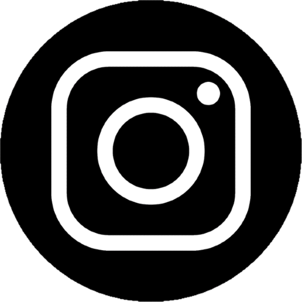

<mat-sidenav-container class="example-container" (backdropClick)="close('backdrop')">
  <mat-sidenav #sidenav (keydown.escape)="close('escape')" opened disableClose class="sidenav-class row">
    <div class="menu">
      <button class="menu-btn" (click)="close('toggle button')">
        <span class="material-icons icon">
          arrow_back_ios
        </span>
      </button>
    </div>
    <div class="navbar-group" style="display: flex;">
      <div class="list">
        <div class="group">
          <span class="material-icons icon" [routerLink]="['/profile']" [routerLinkActive]="['selected']">
            person_outline
          </span>
          <span class="material-icons icon" [routerLink]="['/school']" [routerLinkActive]="['selected']">
            school
          </span>
          <span class="material-icons icon" [routerLink]="['/work']" [routerLinkActive]="['selected']">
            work_outline
          </span>
          <span class="material-icons icon" [routerLink]="['/references']" [routerLinkActive]="['selected']">
            public
          </span>
          <span class="material-icons icon" [routerLink]="['/message']" [routerLinkActive]="['selected']">
            chat_bubble_outline
          </span>
        </div>
        <div class="group">
          <app-language-selector></app-language-selector>
          <span class="material-icons icon download">
            cloud_download
          </span>
        </div>
      </div>
      <div class="nav-image" style="max-height: 937px;">
        
        <div class="info">
          <h1 class="name">{{'GENERIC.NAME' | translate}}</h1>
          <h4 class="pos">{{'GENERIC.ROLE' | translate}}</h4>
          <div class="logos">
            <a href="https://www.linkedin.com/in/dorina-magyar/" target="_blank"></a>
            <a routerLink="/message"></a>
            <a href="https://www.instagram.com/magyardorina/" target="_blank"></a>
            <a href="https://www.facebook.com/dorina.magyar2" target="_blank"></a>
          </div>
        </div>
      </div>
    </div>
  </mat-sidenav>
</mat-sidenav-container>
<div class="mobile-menu">
  <button class="mobile-btn-menu" (click)="sidenav.open()">
    <span class="material-icons icon ">
      menu
    </span>
  </button>
</div>
<!-- <div class="sidenav-content">
  <div class="contents" style="overflow-y: visible;">
    <router-outlet></router-outlet>
  </div>
</div>
 -->
